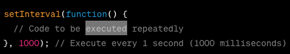

are mechanism used to execute cdoe at a specific time intervals or after certian delay.they are useful for implementing time-based actions, animations, periodic update and more.
two commonly used functions.
setInterval(): repeatedly run a given code snippet.
it take two parameters; the function and the interval duration in milliseconds.

clearInterval(): it return and ID which can be used to stop the interval.
setTimeout will be excuted once, after specific delay.